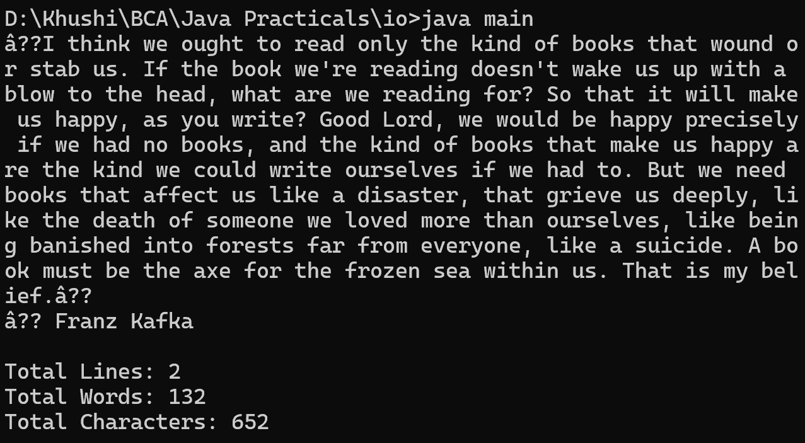

10. Get all characters from the file, count number of lines, words, characters and display on the screen
import java.io.*;
class main {
public static void main(String[] args) {
try {
FileReader fileReader = new FileReader("file.txt");
BufferedReader br = new BufferedReader(fileReader);
int lineCount = 0;
int wordCount = 0;
int charCount = 0;
String line;
while ((line = br.readLine()) != null) {
lineCount++;
String[] words = line.split("\\s+");
wordCount += words.length;
charCount += line.length();
System.out.println(line);
}
System.out.println("\nTotal Lines: " + lineCount);
System.out.println("Total Words: " + wordCount);
System.out.println("Total Characters: " + charCount);
br.close();
} catch (IOException e) {
System.out.println("Error reading the file: " + e.getMessage());
}
}
}
